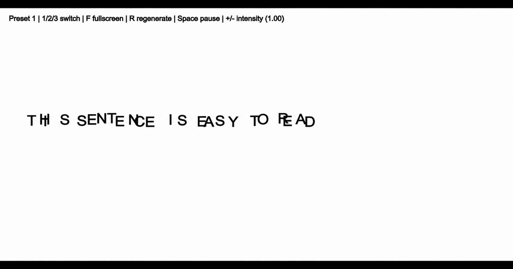
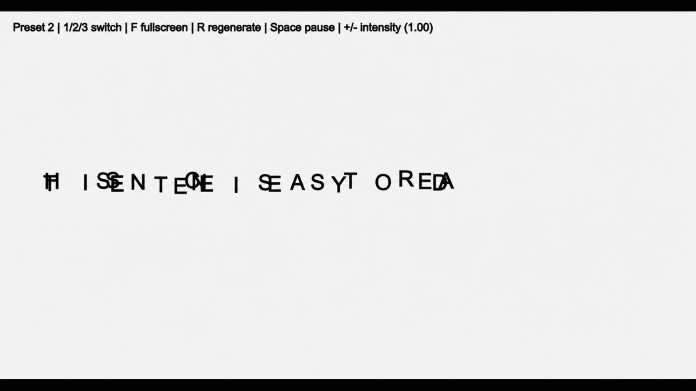
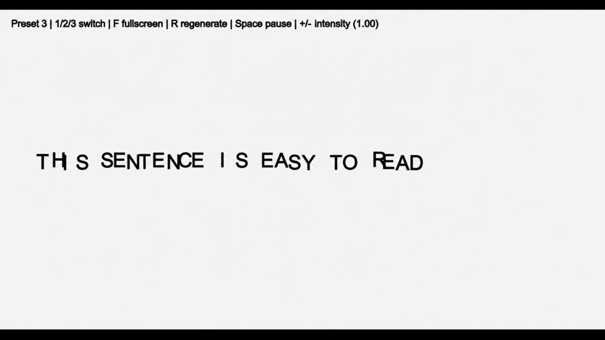

Almost Readable
Almost Readable explores how the meaning of a sentence shifts when its spatial structure is gradually destabilized. The text never becomes fully unreadable, but never settles into complete stability either. By remaining close to legibility, it keeps asking the viewer to reconstruct meaning.
Three states
The same sentence is repeatedly destabilized through changes in position, spacing and rhythm, remaining close to legibility without fully settling.



System
Python · Py5canvas · 90-second generative loop · three spatial disruption presets